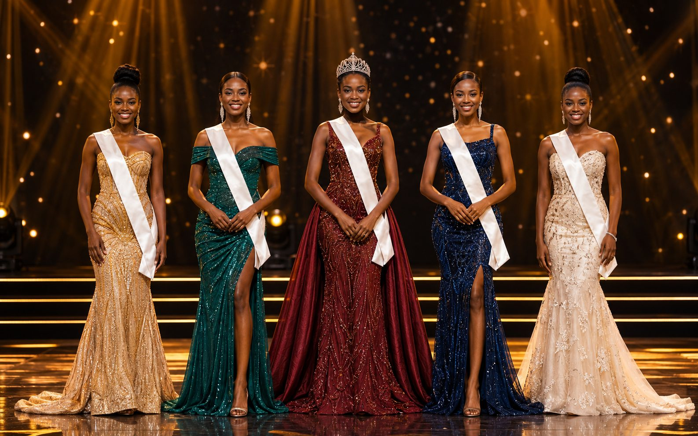

Le programme
Du parcours
à la couronne
Sélections provinciales, académie de formation, gala national, puis année de règne et scènes internationales.
Le programme
Sélections provinciales, académie de formation, gala national, puis année de règne et scènes internationales.
Le concours
Un processus ouvert dans les 26 provinces, avec des critères d'éligibilité clairs et un jury local.
Un programme de 11 modules, benchmark sur celui de Miss France : prise de parole, culture générale, posture, projet social et préparation scénique.
La soirée de désignation de la lauréate Miss RDC, pensée comme un standing événementiel national.
Pendant une année, la lauréate devient ambassadrice de la RDC — missions, accompagnement et participation internationale sous licence.

T4 2026
Désignation de la lauréate Miss RDC 2026 — et le départ d'une année de rayonnement pour le pays.
Agenda
Du lancement des candidatures aux missions internationales — tel que défini par la Coordination Nationale.
Agenda officiel du dossier institutionnel. Les dates jour par jour seront publiées par la Coordination Nationale.
Formation
Onze modules pour préparer chaque candidate bien au-delà de l'apparence : éloquence, culture, posture, projet social et scène — un standard aligné sur les grands concours internationaux.